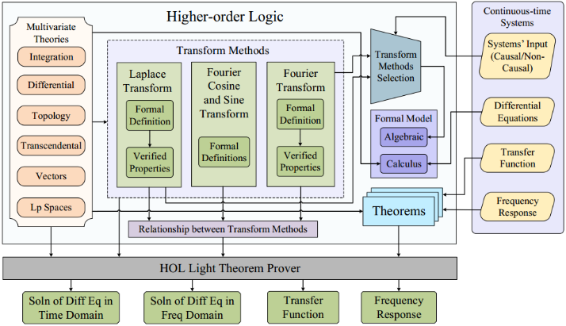

Abstract
Algebraic techniques based on transform methods are widely used for solving differential equations and evaluating transfer function, and frequency response of signals while
analyzing physical aspects of many safety-critical systems. To facilitate formal analysis of these systems, we present the formalization of transform methods (Laplace and
Fourier transforms) using the multivariable calculus theories of HOL Light. In particular, we use integral, differential, transcendental and topological theories of
multivariable calculus to formally define transform methods in higher-order logic and reason about the correctness of their properties, such as existence, linearity, frequency
shifting, modulation, time shifting, time scaling, differentiation and integration in time domain, relationship of Laplace transform with Fourier transform and relationship of
Fourier transform with Fourier Cosine and Fourier Sine transforms. In order to demonstrate the practical effectiveness of this formalization, we use it to formally verify some
commonly used electrical circuits, an automobile suspension system, an audio equalizer, a MEMs accelerometer, controllers and compensators, 4-π soft error crosstalk model and
pitch control of an unmanned free swimming submersible vehicle.
Framework

People
Students
Adnan Rashid, PhD (2014–2019), SAVe Lab, SEECS, NUST, Pakistan
Syeda Hira Taqdees, MS (2012–2013), SAVe Lab, SEECS, NUST, Pakistan
Professors
Osman Hasan, SEECS, NUST, Pakistan
Publications
- A. Rashid, “Formalization of Transform Methods using Higher-order-logic Theorem Proving”, PhD Thesis, National University of Sciences and Technology (NUST), Islamabad, Pakistan. 2019.
- A. Rashid and O. Hasan, “Formal Analysis of Continuous-time Systems using Fourier Transform”, Journal of Symbolic Computation, Elsevier, Volume 90, pp. 65-88, 2019.
- A. Rashid and O. Hasan, “Formalization of Lerch’s Theorem using HOL Light”, Journal of Applied Logic, IfCoLog Journal of Logics and their Applications, Volume 5, Number 8, pp. 1623-1652, 2018.
- A. Rashid, U. Siddique and O. Hasan, “Formal Verification of Platoon Control Strategies”, International Conference on Software Engineering and Formal Methods (SEFM-2018), Springer, LNCS 10886, Toulouse, France, pp. 223-238.
- A. Rashid and O. Hasan, “Formal Analysis of Linear Control Systems using Theorem proving”, International Conference on Formal Engineering Methods (ICFEM-2017), Springer, LNCS 10610, Xian, China, pp. 345-361.
- A. Rashid and O. Hasan, “Formalization of Transform Methods using HOL Light”, Conference on Intelligent Computer Mathematics (CICM-2017), Springer, LNAI 10383, Edinburgh, UK, pp. 319-332.
- S.H. Taqdees and O. Hasan, “Formally Verifying Transfer Functions of Linear Analog Circuits”, IEEE Design & Test, Volume 34, Issue 5, pp. 30-37, 2017.
- A. Rashid and O. Hasan, “On the Formalization of Fourier Transform in Higher-order Logic”, Interactive Theorem Proving (ITP 2016), Springer, LNCS 9807, Nancy, France, pp. 483-490. (Rank A, CORE)
- S.H. Taqdees and O. Hasan, “Formalization of Laplace Transform Using the Multivariate Calculus Theory of HOL Light”, Logic for Programing Artificial Intelligence and Reasoning (LPAR 2013), Springer LNCS 8312, Stellenbosch, South Africa, pp. 744–758. (Rank A, CORE)
- S.H. Taqdees, “Formalization of Laplace Transform using the Multivariable Calculus Theory of HOL Light”, Masters Thesis, National University of Sciences and Technology (NUST), Islamabad, Pakistan. 2013.